C Przykład analizy geostatystycznej
C.1 Analiza geostatystyczna
Analiza geostatystyczna jest złożonym procesem, często wymagającym sprawdzenia jakości danych i ich korekcji oraz wypróbowania wielu możliwości modelowania. Poniższy appendiks skupia się na pokazaniu przykładu uproszczonej analizy geostatystycznej, w której głównym celem jest estymacja średniej wartości temperatury.
C.2 Przygotowanie danych
Pierwszym krokiem analizy geostatystycznej jest załadowanie pakietów, które zostaną użyte. Brakujące pakiety można także załadować także w trakcie analizy geostatystycznej.
Kolejnym krokiem jest wczytanie danych oraz sprawdzenie ich jakości.
## tavg X Y geom
## Min. :-0.8726 Min. :345007 Min. :312609 POINT :188
## 1st Qu.: 1.0871 1st Qu.:347681 1st Qu.:314664 epsg:2180 : 0
## Median : 1.6470 Median :351093 Median :316628 +proj=tmer...: 0
## Mean : 1.6204 Mean :350809 Mean :316827
## 3rd Qu.: 2.1644 3rd Qu.:353591 3rd Qu.:319037
## Max. : 4.0310 Max. :357010 Max. :321540Obiekt moje_punkty zawiera tylko jedną zmienną tavg, która ma być użyta do stworzenia estymacji.
Warto zwizualizować rozkład wartości tej zmiennej w postaci histogramu oraz mapy (rycina C.1 i C.2).
ggplot(moje_punkty, aes(tavg)) + geom_histogram()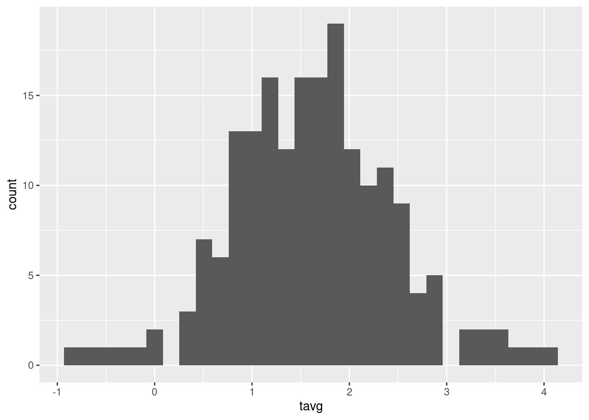
Rycina C.1: Rozkład wartości zmiennej tavg.
tm_shape(moje_punkty) +
tm_symbols(col = "tavg")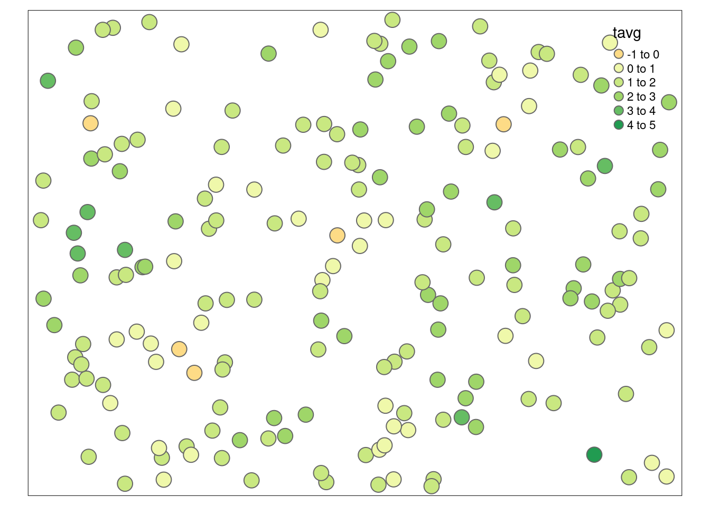
Rycina C.2: Rozkład przestrzenny wartości zmiennej tavg.
Pozwala to na zauważenie, że w badanej zmiennej występują co najmniej dwie wartości odstające.
moje_punkty[moje_punkty$tavg == max(moje_punkty$tavg), ]## Simple feature collection with 1 feature and 3 fields
## Geometry type: POINT
## Dimension: XY
## Bounding box: xmin: 355581.8 ymin: 313212.1 xmax: 355581.8 ymax: 313212.1
## Projected CRS: ETRF2000-PL / CS92
## # A tibble: 1 × 4
## tavg X Y geom
## <dbl> <dbl> <dbl> <POINT [m]>
## 1 4.03 355582. 313212. (355581.8 313212.1)
moje_punkty[moje_punkty$tavg == min(moje_punkty$tavg), ]## Simple feature collection with 1 feature and 3 fields
## Geometry type: POINT
## Dimension: XY
## Bounding box: xmin: 353849 ymin: 319540.7 xmax: 353849 ymax: 319540.7
## Projected CRS: ETRF2000-PL / CS92
## # A tibble: 1 × 4
## tavg X Y geom
## <dbl> <dbl> <dbl> <POINT [m]>
## 1 -0.873 353849. 319541. (353849 319540.7)Jedna z nich ma wartość ok. -3,5 °C i jest znacznie niższa od pozostałych, druga natomiast jest znacznie wyższa od pozostałych i ma wartość ok. 9,2 °C. Należy w tym momencie zastanowić się czy te wartości odstające są prawidłowymi wartościami, czy też są one błędne. W tej sytuacji, nie posiadając zewnętrznej informacji, bezpieczniej jest usunąć te dwa pomiary. Można to zrobić wyszukując id punktów za pomocą pakietu tmap.
Teraz id punktów można użyć do ich wybrania i zastąpienia potencjalnie błędnych wartości wartościami NA.
# usunięcie wartości według id
moje_punkty[60, "tavg"] = NA
moje_punkty[72, "tavg"] = NATe punkty nadal istnieją jednak w obiekcie moje_punkty.
Można je usunąć korzystając z funkcji is.na oraz indeksowania:
moje_punkty = moje_punkty[!is.na(moje_punkty$tavg), ]Po tej zmianie powinno się po raz kolejny obejrzeć dokładnie dane w celu stwierdzenia, czy problem został naprawiony i czy nie występują dodatkowe sytuacje problemowe (rycina C.3 i C.4).
ggplot(moje_punkty, aes(tavg)) + geom_histogram()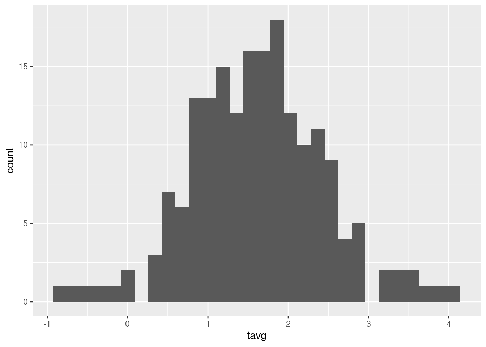
Rycina C.3: Rozkład wartości zmiennej tavg po usunięciu wartości odstających.
tm_shape(moje_punkty) +
tm_symbols(col = "tavg")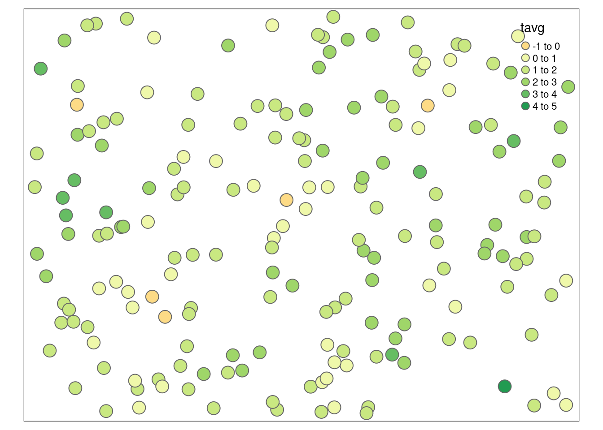
Rycina C.4: Rozkład przestrzenny wartości zmiennej tavg po usunięciu wartości odstających.
Można dodatkowo stworzyć chmurę semiwariogramu w celu wyszukania potencjalnych wartości lokalnie odstających (rycina C.5).
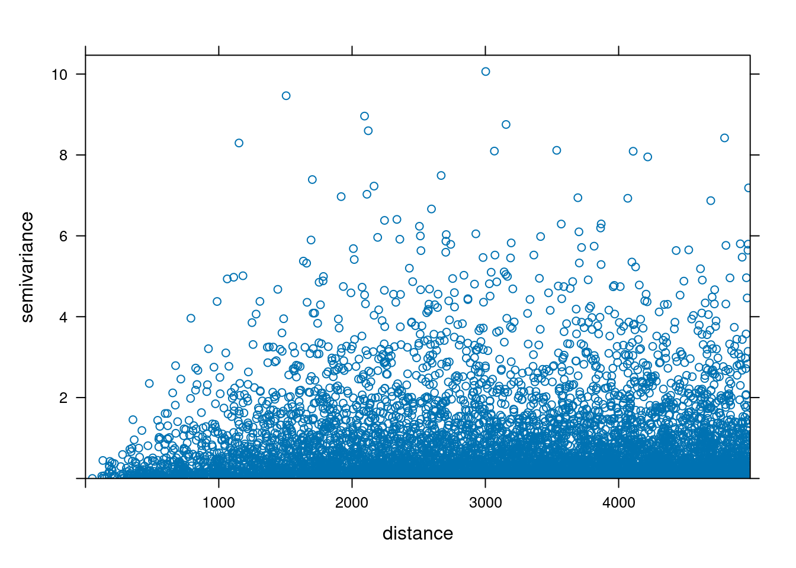
Rycina C.5: Chmura semiwariogramu zmiennej tavg.
C.3 Tworzenie modeli semiwariogramów
Posiadając już poprawne dane można sprawdzić czy badane zjawisko wykazuje anizotropię przestrzenną poprzez stworzenie mapy semiwariogramu (rycina C.6).
moja_mapa = variogram(tavg ~ 1,
locations = moje_punkty,
cutoff = 4500,
width = 850,
map = TRUE)
plot(moja_mapa, threshold = 30,
col.regions = hcl.colors(40, palette = "ag_GrnYl", rev = TRUE))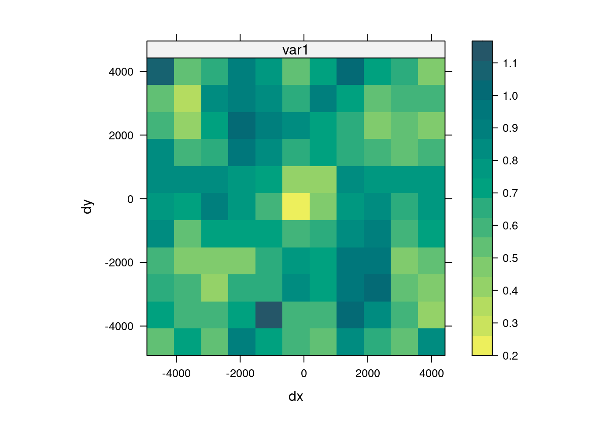
Rycina C.6: Mapa semiwariogramu zmiennej tavg.
Uzyskana mapa nie pozwala na jednoznaczne stwierdzenie kierunkowej zmienności podobieństwa badanej cechy, w związku z tym można skupić się na modelowaniu izotropowym.
Kolejnym etapem jest stworzenie semiwariogramu oraz jego modelowanie.
Optymalnie tworzy się więcej niż jeden model semiwariogramu, co pozwala na porównanie uzyskanych wyników i wybór lepszego modelu.
Do tego przykładu zostały stworzone dwa modele semiwariogramu.
Pierwszy z nich używa tylko zmiennej tavg oraz modelu ręcznego o wybranych parametrach (ryciny C.7, C.8, C.9, C.10).
Rycina C.7: Semiwariogram zmiennej tavg.
moj_model = vgm(psill = 0.65,
model = "Sph",
range = 2000,
nugget = 0.15)
plot(moj_semiwar, moj_model)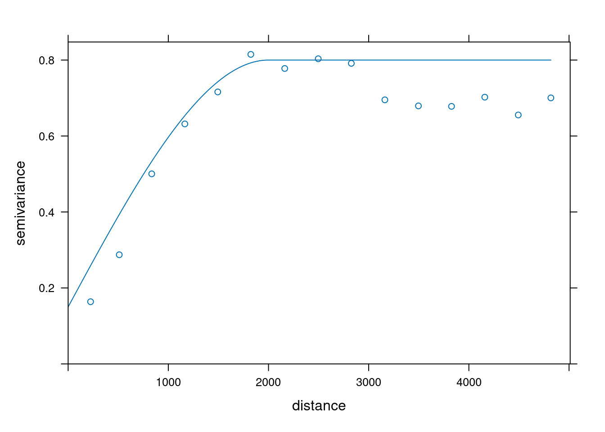
Rycina C.8: Model semiwariogramu zmiennej tavg.
Drugi model, oprócz zmiennej tavg, używa też wartości współrzędnych oraz modelu o parametrach zmodyfikowanych przez funkcję fit.variogram().
moje_punkty$X = st_coordinates(moje_punkty)[, 1]
moje_punkty$Y = st_coordinates(moje_punkty)[, 2]
moj_semiwar2 = variogram(tavg ~ X + Y,
locations = moje_punkty)
plot(moj_semiwar2)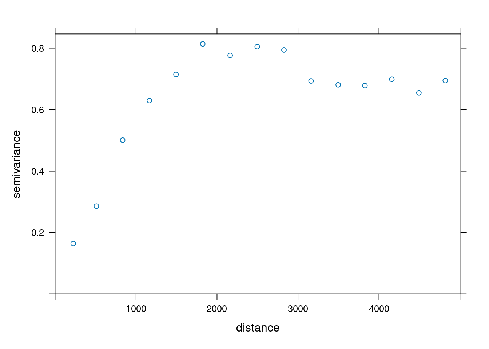
Rycina C.9: Semiwariogram zmiennej tavg uwzględniający współrzędne x i y.
moj_model2 = vgm(model = "Sph", nugget = 0.1)
moj_model2 = fit.variogram(moj_semiwar2, moj_model2)
moj_model2## model psill range
## 1 Nug 0.01750625 0.000
## 2 Sph 0.73618909 1852.585
plot(moj_semiwar2, moj_model2)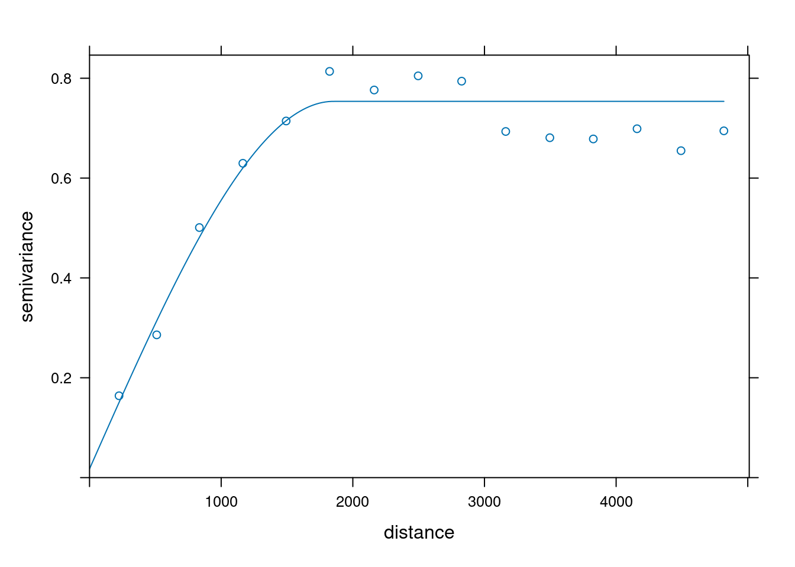
Rycina C.10: Model semiwariogramu zmiennej tavg uwzględniający współrzędne x i y.
C.4 Ocena jakości modeli
Aby porównać oba modele należy przyjąć metodę walidacji oraz współczynnik jakości estymacji.
W tym przykładzie użyto kroswalidacji metodą LOO (funkcja krige.cv) oraz pierwiastek błędu średniokwadratowego (RMSE) jako miarę jakości.
ocena1 = krige.cv(tavg ~ 1,
locations = moje_punkty,
model = moj_model,
beta = 30)
RMSE1 = sqrt(mean((ocena1$residual) ^ 2))
ocena2 = krige.cv(tavg ~ X + Y,
locations = moje_punkty,
model = moj_model2)
RMSE2 = sqrt(mean((ocena2$residual) ^ 2))Porównanie dwóch wartości RMSE pozwala zdecydowanie stwierdzić, że drugi model charakteryzuje się lepszą jakością estymacji.
RMSE1## [1] 6.233389
RMSE2## [1] 0.586952C.5 Stworzenie siatki
Przedostatnim krokiem jest utworzenie siatki do estymacji. Do niej zostaną wpisane wartości uzyskane z modelu semiwariogramu.
punkty_bbox = st_bbox(moje_punkty)
moja_siatka = st_as_stars(punkty_bbox,
dx = 100,
dy = 100)
moja_siatka$X = st_coordinates(moja_siatka)[, 1]
moja_siatka$Y = st_coordinates(moja_siatka)[, 2]C.6 Stworzenie estymacji
Następnie nowo utworzona siatka może posłużyć do stworzenia estymacji (rycina C.11).
moja_estymacja = krige(tavg ~ X + Y,
locations = moje_punkty,
newdata = moja_siatka,
model = moj_model2)## [using universal kriging]
tm_shape(moja_estymacja) +
tm_raster(col = "var1.pred", style = "cont", palette = "-Spectral")
tm_shape(moja_estymacja) +
tm_raster(col = "var1.var", style = "cont", palette = "viridis")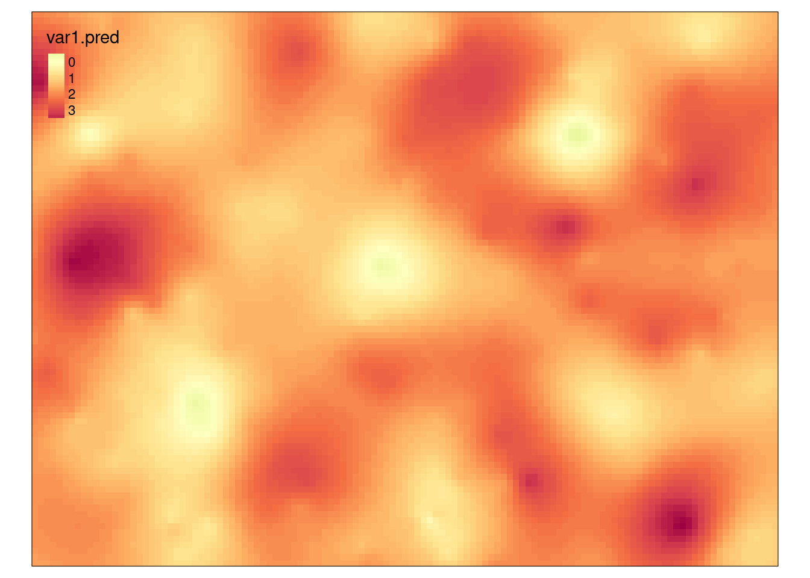
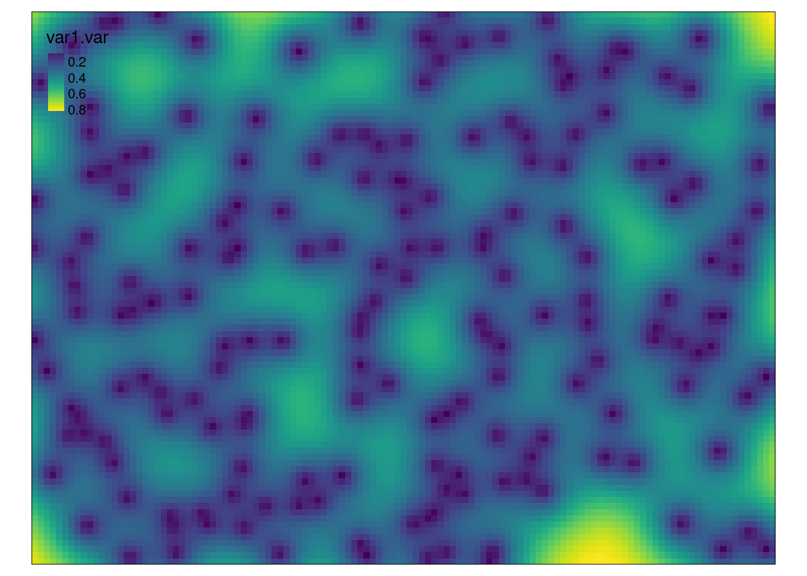
Rycina C.11: Estymacja i wariancja estymacji drugiego modelu zmiennej tavg.
Wynikiem uproszczonej analizy geostatystycznej jest mapa estymowanych wartości temperatury dla całego badanego obszaru oraz mapa przedstawiająca wariancję estymacji temperatury.